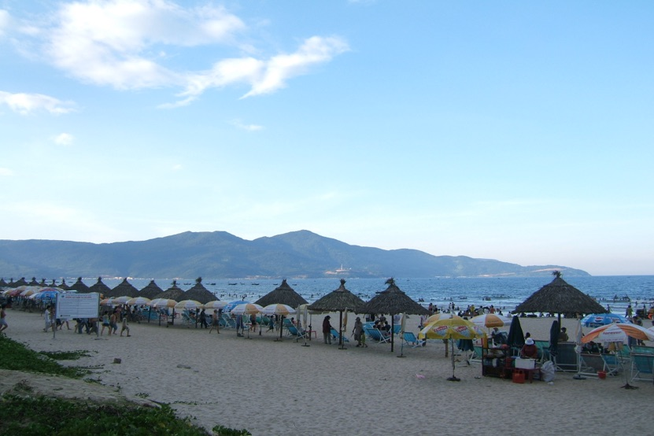

Renting guides
Da Nang or Ho Chi Minh City: Which Should You Move To?
Rent, rain, floods, jobs, hospitals and flights, compared for people choosing where in Vietnam to live.
Bài viết này hiện chỉ có bản tiếng Anh. Menu và phần điều hướng đã chuyển sang tiếng Việt. Alice nói tiếng Việt và tiếng Anh, nhắn tin cho cô nếu bạn cần giải thích bằng tiếng Việt.
Key takeaways
- Ho Chi Minh City has more than 14 million people since its July 2025 merger and produced about 23.5 percent of Vietnam's GDP in 2025. Da Nang has about 3 million people.
- In my listings on 14 October 2026, a one bedroom apartment in Da Nang had a median rent of $688, from $380. 2026 guides to Thao Dien, Saigon's main expat area, put a one bedroom at $850 to $1,200.
- The rainy seasons fall at different times. Saigon's runs from May to November and Da Nang's from about September to December, so Da Nang's dry beach months fall in Saigon's wet season.
- Saigon floods more often, from high tides as well as rain: 75 days above the first tide warning level by November 2025. Da Nang floods less often but harder, as in late October 2025.
- Saigon has more hospitals, more international schools and nonstop flights to Europe and San Francisco. Da Nang has no scheduled nonstop to Western Europe or the US.
Should you live in Da Nang or Ho Chi Minh City?
Choose Ho Chi Minh City if your job, your clients or your children's school ties you to Vietnam's business capital. Choose Da Nang if your income comes from outside Vietnam and you want a beach, more space for your rent and a smaller city to learn.
I have rented homes to foreigners in Da Nang since 2019, and many of the people who message me are deciding between these two cities. Saigon wins most of the big numbers: people, jobs, hospitals, schools, flights. Da Nang wins on the things that fill an ordinary week, such as rent, the sea and the time you spend in traffic.
| Da Nang | Ho Chi Minh City | |
|---|---|---|
| Best for | Income from abroad, families who want space, beach life | Local jobs, business, the widest choice of services |
| Population | About 3 million | More than 14 million |
| One bedroom rent | $688 median in my listings | $850 to $1,200 in Thao Dien |
| Rainy season | September to December | May to November |
| Flooding | A few big storm floods, mostly October and November | Tidal and rain flooding in low streets, many days a year |
| Nearest beach | My Khe, inside the city | Vung Tau, about two hours by road |
| Long-haul flights | Connect via Saigon, Hanoi or an Asian hub | Nonstop to Europe and San Francisco |
| International schools | Five, up to about $25,500 a year | Many more, up to about $36,900 a year |
Pick Saigon for the job market. Pick Da Nang for what your rent buys.
How much cheaper is rent in Da Nang than in Saigon?
Rent is lower in Da Nang, and the gap is widest in the towers foreigners ask for. In my listings on 14 October 2026, a one bedroom apartment had a median rent of $688 a month across 30 homes, from $380, and a two bedroom $1,385 across 34. 2026 rental guides to Thao Dien, the riverside area of former District 2 where many Saigon expats live, put a one bedroom at $850 to $1,200.
| Area or building | City | One bedroom |
|---|---|---|
| My An (An Thuong) | Da Nang | $645 median (from $570) |
| Son Tra | Da Nang | $646 median (from $440) |
| Ngu Hanh Son | Da Nang | $722 median ($380 to $950) |
| Masteri Thao Dien | Ho Chi Minh City | $700 to $850 |
| Gateway Thao Dien | Ho Chi Minh City | $850 to $1,100 |
| The Nassim, Thao Dien | Ho Chi Minh City | $1,000 to $1,400 |
The cheapest one bedrooms in Saigon's local buildings run $400 to $900 in the same guides, close to Da Nang prices. The difference shows in the branded towers with a pool and a gym downstairs, and in houses. In Son Tra, houses in my listings start at $950 a month, less than many one bedroom flats in Thao Dien.
Outside rent, comparisons built on Numbeo data put everyday costs about 13 percent higher in Ho Chi Minh City. Deposits, leases and utility bills work the same way in both cities, and the guide to renting in Da Nang as a foreigner covers them line by line.
When is the rainy season in each city?
The two rainy seasons fall at different times of year. Saigon's runs from May to November, with short, heavy afternoon storms that peak from July to October. Da Nang's runs from about September to December, and October and November bring the long storms and typhoon rain.
Saigon stays hot all year, with average temperatures around 27 to 28°C and April the hottest month. Da Nang has a cooler stretch: January mornings drop to about 18°C, and July afternoons reach 35°C. Its beach season runs from February to August, which covers most of Saigon's wet months.
If the weather decides your move, arrive in Da Nang in February or March and you get six dry months before the first storms. The month by month weather guide shows what each part of the year is like.
Which city floods more?
Saigon floods more often. Da Nang floods less often, but harder when it does. Much of Saigon sits low beside the Saigon River, so a high tide can push water into the streets on a day without rain. By November 2025 the city had recorded 75 days with tides above its first warning level of 1.4 metres, and officials listed 23 places that go under whenever the tide passes it, mostly in the former Districts 7 and 8, Nha Be and Binh Chanh.

Da Nang's floods come with storms. In late October 2025, record rain fell across central Vietnam, more than 75,000 households in Da Nang were flooded, and the water in Hoi An reached 3.4 metres, level with the 1964 record. Most years bring a few days of standing water on low streets and nothing on that scale.
My advice is the same in both cities: rent above the ground floor and ask the landlord how high the water came last year. In Saigon, also see the street at high tide. The city's forecasts for late September 2026 put the highest tides in the 6 to 8am and 5 to 7pm rush hours.
How different is daily life in a city of 14 million?
Very different. Since merging with Binh Duong and Ba Ria-Vung Tau on 1 July 2025, Ho Chi Minh City has more than 14 million people, close to five times Da Nang's population. It has the restaurants, nightlife and shopping of a city that size, and the traffic too.
Saigon's first metro line opened in December 2024 and carried about 20.5 million rides in 2025, linking Ben Thanh market in the centre with Thao Dien and Suoi Tien. Da Nang has no metro, and most of my clients get around by motorbike or Grab. The Da Nang and Hanoi comparison covers how short trips across Da Nang are.

The merger put the Vung Tau coast inside Ho Chi Minh City, but its beaches are still about two hours by road from Thao Dien. In Da Nang, My Khe beach is a ten to fifteen minute ride from the city centre, and many of the homes I rent are within walking distance of it.
Which city is better for work and business?
Saigon, by a wide margin, if you need a job inside Vietnam. The city produced about 23.5 percent of Vietnam's GDP in 2025, and output per person, about $8,944, was 1.7 times the national average. If you are applying to Vietnamese or foreign companies here, Saigon has far more openings.
Da Nang suits income from elsewhere. You keep the same time zone as Saigon, and the coworking guide lists where remote workers base themselves. Local hiring is narrower and leans toward tourism, hospitality and IT. If you are opening a business here, I also find offices, shops and restaurant spaces in Da Nang.
Which city has better hospitals and schools?
Saigon has more of both. FV Hospital in District 7 was the first JCI accredited hospital in southern Vietnam, and about a quarter of its patients have been foreigners. Vinmec Central Park in Binh Thanh is another private hospital expats use.
In Da Nang, Vinmec Da Nang International Hospital handles specialists and emergencies, and Family Medical Practice in Hai Chau, a foreign-run clinic, handles everyday visits. For complex specialist treatment, Saigon is a flight of about 1 hour 20 minutes away.
Five international schools serve Da Nang families, with 2026/27 tuition from about $6,500 to $25,500 a year. Saigon has many more, across more curricula and price points. At International School Ho Chi Minh City in Thao Dien, 2025/26 fees run up to 959 million dong, about $36,900, for Grade 12. The guide to Da Nang with kids lists every Da Nang school and its fees.
Which city is easier to fly home from?
Saigon, for long-haul trips. Vietnam Airlines flies nonstop from Ho Chi Minh City to Europe, including Paris, Frankfurt and, since December 2025, Copenhagen, and to San Francisco. Da Nang has no scheduled nonstop flights to Western Europe or the US, so you connect through Saigon, Hanoi or an Asian hub such as Seoul, Bangkok or Singapore.
Saigon's long-haul flights are moving. Long Thanh International Airport, in Dong Nai east of the city, is due to open for commercial flights in December 2026, with long-haul routes moving there in stages through 2027. Da Nang's airport stays inside the city, and the Hanoi comparison lists its direct routes around Asia.
Who should choose Da Nang over Saigon?
Choose Da Nang if your income comes from outside Vietnam, you want to swim before work, or you want a house with outdoor space for the price of a one bedroom in Thao Dien. Choose Saigon if you are hired locally, need specialist medical care nearby, fly long-haul every month, or want a big city's nightlife every night of the week.
If you are moving from Thao Dien, start your search in My An. Its An Thuong streets have the cafes, gyms and foreign community closest to what you know, a few minutes' walk from the beach. The guide to where to live in Da Nang compares all five areas.
If your income comes from abroad, Da Nang gives you more home and more sea for the same money.
Frequently asked questions
Is Da Nang cheaper than Ho Chi Minh City?
Yes, most of all on rent. In Alice Rentals listings on 14 October 2026, a one bedroom apartment in Da Nang had a median rent of $688 a month. 2026 rental guides to Thao Dien, the main expat area of Ho Chi Minh City, put a one bedroom at $850 to $1,200. Day to day costs outside rent are also somewhat lower in Da Nang.
Is Da Nang or Ho Chi Minh City better for expats?
Da Nang suits expats with an income from abroad who want the beach, more space for their rent and a smaller city. Ho Chi Minh City suits expats hired locally, families who want the widest choice of international schools, people who need specialist hospitals close by, and frequent long-haul flyers.
When is the rainy season in Da Nang and Ho Chi Minh City?
Ho Chi Minh City's rainy season runs from May to November, with short, heavy afternoon storms. Da Nang's runs from about September to December, with most of the heavy rain in October and November. Da Nang's dry season, February to August, overlaps most of Saigon's wet months.
Does Ho Chi Minh City flood?
Yes. Low-lying streets flood when heavy rain meets a high tide on the Saigon River. By November 2025 the city had logged 75 days with tides above its first warning level, and officials listed 23 places that go under whenever the tide passes it, mostly in the former Districts 7 and 8, Nha Be and Binh Chanh.
Is there a beach in Ho Chi Minh City?
Since the July 2025 merger with Ba Ria-Vung Tau, the Vung Tau coast is part of Ho Chi Minh City, about two hours by road from the centre. Can Gio, in the south of the city, also has a beach. In Da Nang, My Khe beach is a ten to fifteen minute ride from the city centre.
How long is the flight from Ho Chi Minh City to Da Nang?
About 1 hour 20 minutes. Vietnam Airlines and Vietjet fly the route many times a day, so a Saigon hospital appointment or a long-haul connection is a short trip from Da Nang.